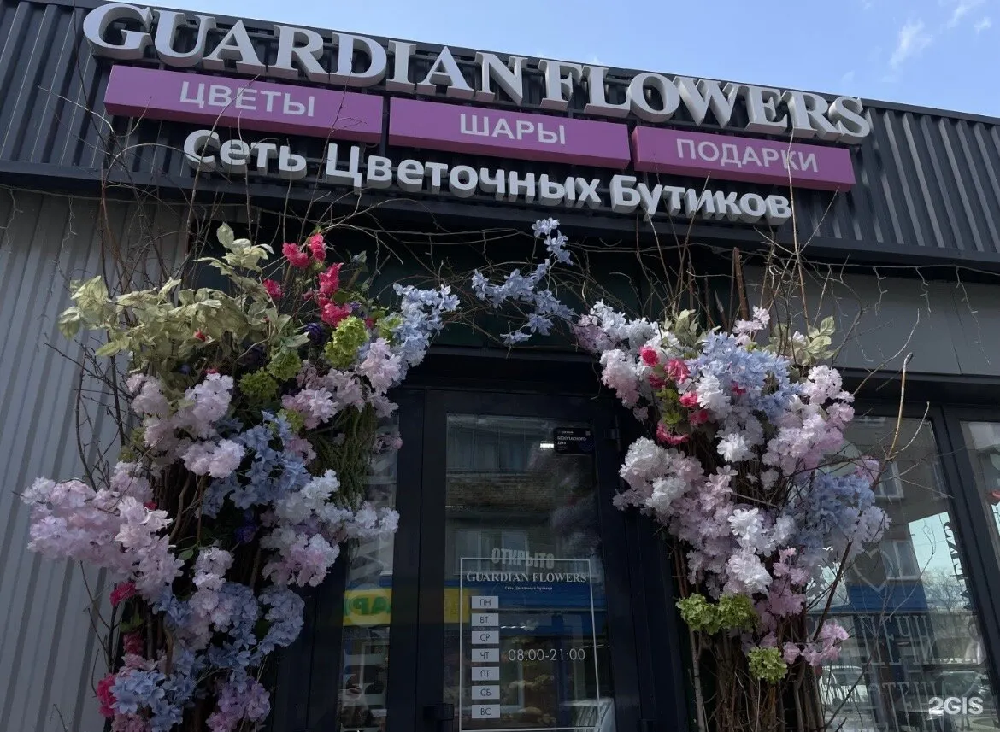
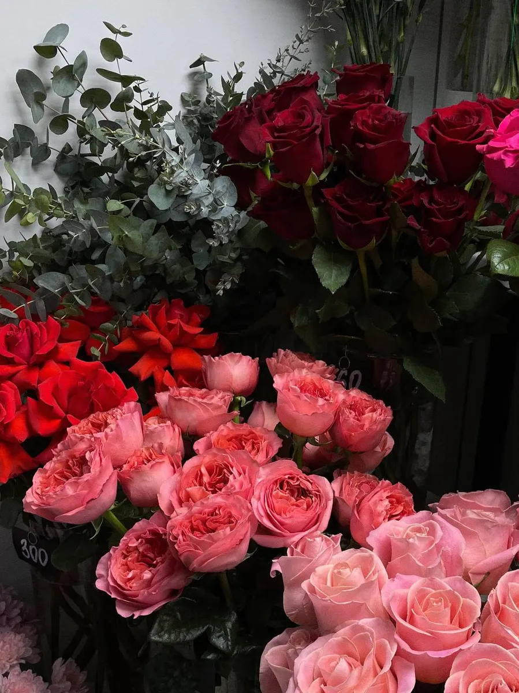
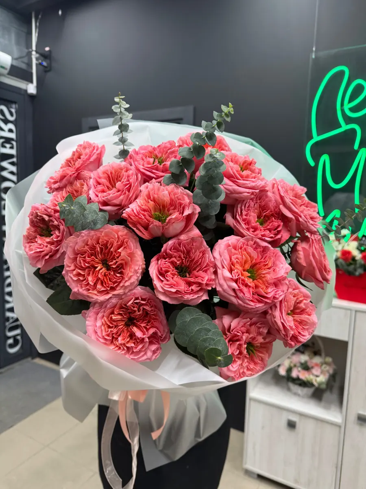
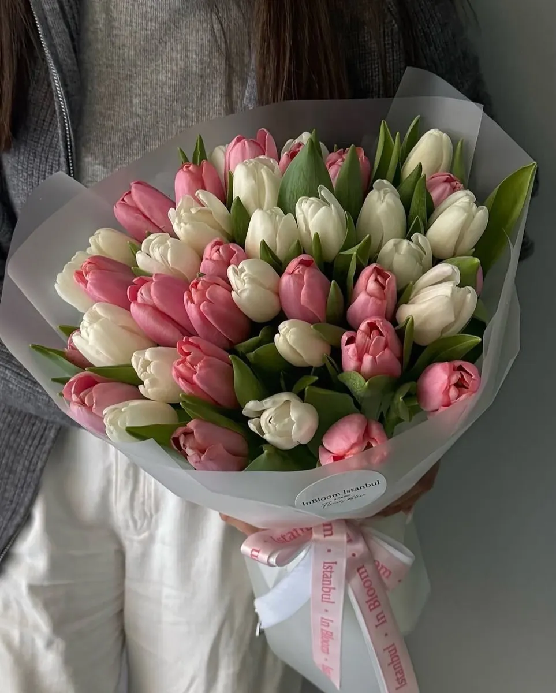

Магазин цветов · Барнаул · круглосуточно
Цветы, которые стоят долго, – с доставкой по Барнаулу
Свежие букеты и готовые композиции, открытки и подарки к букету. Работаем круглосуточно, фото букета пришлём перед отправкой.
- Открыты круглосуточно, каждый день
- Фото букета перед отправкой
- Готовые композиции и подарки к букету

Что входит
Входит
- Букет по вашему бюджету и повод
- Фото букета для согласования
- Открытка и упаковка на выбор
- Подарки и дополнения к букету
Отдельно, если нужно
- Доставка – по тарифу
- Композиции под заказ – отдельный расчёт
Цены
Примеры букетов с карточки на Яндекс.Картах. Точный состав и стоимость подтверждаем при заказе.
Букеты
- Букет «Нежный подснежник»3 450 ₽
- Сборный букет из пионовидных роз и диантусов5 990 ₽
- Трендовый дофаминовый букет6 200 ₽
Доставка
- Доставка по Барнаулууточнить
- Самовывозул. Антона Петрова, 176Буточнить
Цены на карточке давно не обновлялись, актуальную стоимость уточняйте. Композиции под заказ считаем отдельно.
Как заказать
- 01
Напишите повод и бюджет
В Telegram, WhatsApp, ВК или Макс, в любое время суток.
- 02
Выберите вариант
Пришлём готовые букеты и композиции с фото.
- 03
Согласуйте фото
Покажем собранный букет до отправки и поможем с открыткой.
- 04
Получите
Доставка получателю или самовывоз.



Почему к нам возвращаются
Работаем круглосуточно
На карточке: открыты каждый день, в любое время.
Свежие цветы
Клиенты пишут, что цветы стоят долго и остаются свежими.
Фото перед отправкой
Покажем букет и поможем выбрать открытку.
Большой выбор
Готовые композиции, подарки и аксессуары к букету.
Отзывы с Яндекс.Карт
«Заказывала букет с доставкой. Все привезли точно в срок, цветы один к одному — свежайшие и ароматные! На этапе заказа меня отлично проконсультировали: прислали фото перед отправкой, помогли с выбором открытки. Огромное спасибо за заботу о клиентах и качественную работу!»
Мария · 3 июля
«Хорошая атмосфера, классная музыка, приятное обслуживание, свежие и красивые цветы, большой выбор открыток и разной атрибутики для букетов. Жена осталась довольна.»
Данил К. · 23 апреля
«Цветы свежие☺️ очень приятные флористы, всегда помогут и подскажут. Беру цветы только здесь, очень часто попадаю на всякие скидки, бесплатную доставку. Спасибо»
Далина Овчинникова · 21 апреля
Отзывы с карточки на Яндекс.Картах, без правок.
Частые вопросы
Вы работаете ночью?
Да, на карточке на Картах указан круглосуточный режим, каждый день.
Можно заказать доставку?
Да, оформляем доставку по Барнаулу. Стоимость и время подтвердим при заказе.
Покажете букет до отправки?
Да, клиенты пишут, что присылаем фото перед отправкой и помогаем с открыткой.
Как узнать итоговую цену?
Назовём состав и цену при подтверждении заказа, до оплаты.
Напишите повод и час
- Адрес
- ул. Антона Петрова, 176Б, Барнаул, Барнаул
- Часы
- Круглосуточно, ежедневно
- Телефон
- +7 (962) 797-37-65